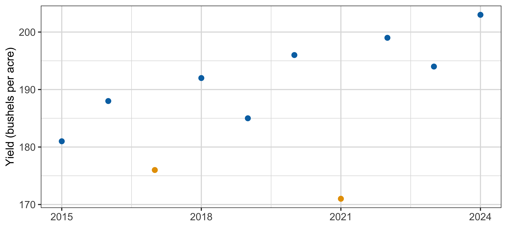
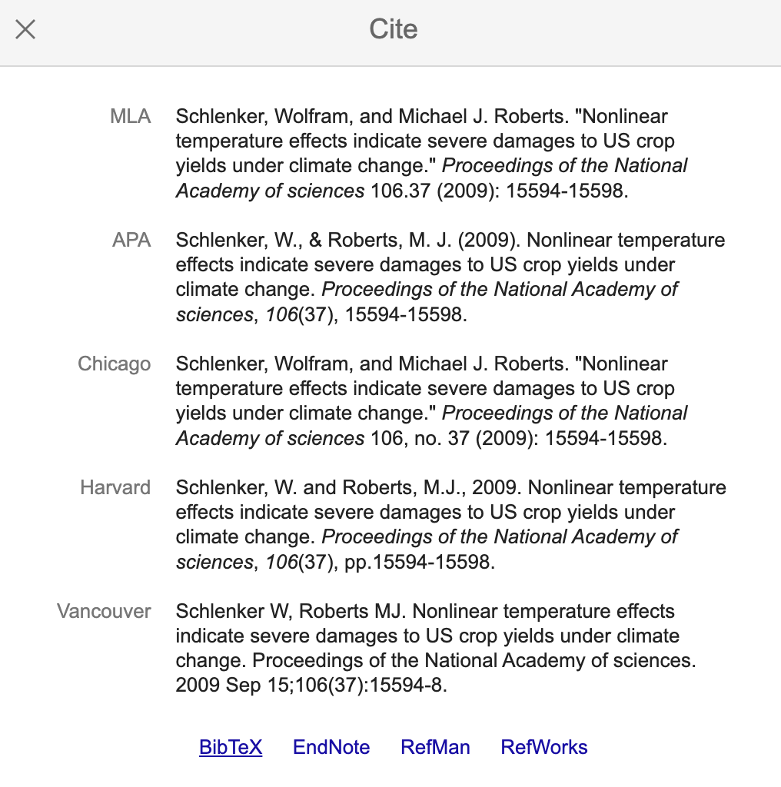

A thesis chapter or a journal article can be written as a Quarto document: the text, the code that makes every figure and table, and the references, in one file that renders to Word, PDF or HTML. Every number and figure then comes from the data at each render, and the reference list is built from what you cite.
An AI assistant can set all of this up and write every line of it. What it cannot do is:
So today is about:
quarto install tinytex).| Report (lecture 02-1) | Article | |
|---|---|---|
| Reader | Advisor, coauthor: checks the work | Referee, journal reader: follows the argument |
| Code | Shown or folded | Hidden; the code stays in the .qmd |
| Figures and tables | Under the chunk that makes them | Numbered, with captions, and referred to by number (“Figure 2 shows”) |
| Claims from others’ work | Rare | Cited, with a reference list in the journal’s style |
| Format | HTML | What the journal asks for: usually Word or PDF |
The last three rows are what this lecture is about. All three can go wrong without an error: a reference to a figure that does not resolve, a citation to a key that is not in your reference file, a reference that does not exist. The render finishes; only reading the output finds them.
Figures, tables and equations all follow the same pattern: give the item a label with the right prefix and a caption, then refer to the label in the text.
| Item | Label must start with | Caption | In the text, write | The reader sees |
|---|---|---|---|---|
| Figure from a chunk | fig- |
#| fig-cap: "..." |
@fig-yield |
Figure 1 |
| Table from a chunk | tbl- |
#| tbl-cap: "..." |
@tbl-summary |
Table 1 |
| Equation | eq- |
none | @eq-trend |
Equation 1 |
Numbers are given in order of appearance and change by themselves when items are added or moved. The word “Figure” is added for you: write @fig-yield, not Figure @fig-yield, which gives “Figure Figure 1”.
```{r}
#| label: fig-harvest
#| fig-cap: "Yield on the farm, 2015 to 2024. Drought years in orange."
ggplot(harvest, aes(x = year, y = yield, colour = drought)) + ...
```
Yields rose over the decade, except in drought years (@fig-harvest).Rendered:

Yields rose over the decade, except in drought years (Figure 1).
```{r}
#| label: tbl-drought
#| tbl-cap: "Average yield in drought and other years."
harvest |> group_by(drought) |> summarise(years = n(), yield = mean(yield))
```
Drought years averaged far less than other years (@tbl-drought).Rendered:
| drought | years | average_yield |
|---|---|---|
| FALSE | 8 | 192.2 |
| TRUE | 2 | 173.5 |
Drought years averaged far less than other years (Table 1).
Math is written between dollar signs, in the notation of LaTeX (the typesetting system most journals use): $\beta$ inside a sentence, $$ ... $$ on its own line. A label after the closing $$ numbers it:
$$
y_t = \alpha + \beta t + \varepsilon_t
$$ {#eq-trend}
The trend $\beta$ in @eq-trend is estimated by least squares.Rendered:
\[ y_t = \alpha + \beta t + \varepsilon_t \qquad(1)\]
The trend \(\beta\) in Equation 1 is estimated by least squares.
A reference to a label that does not exist, or whose prefix is wrong, does not stop the render. Quarto prints a warning in the render log and puts the label, with a question mark, into the text:
This happens when the chunk was labelled plot-two instead of fig-two, when a label contains _ where the text has -, or when the AI renamed a chunk and not the reference. Search every output for ?@ before you send it.
References live in a bibliography file, usually ending in .bib. The header names it, and the text cites entries by their key, the first word of each entry:
---
bibliography: references.bib
csl: american-journal-of-agricultural-economics.csl
---
The figures were made with ggplot2 [@wickham2016].
@wickham2016 describes the system behind them.| You write | The reader sees |
|---|---|
[@wickham2016] |
(Wickham 2016) |
@wickham2016 |
Wickham (2016), as part of the sentence |
[@wickham2016; @rcore2025] |
two works in one bracket |
The reference list is built from what you cite, in the style the csl file names (a CSL file holds one journal’s citation style; thousands are free at zotero.org/styles). Change that one line, and every citation and the list are restyled. Entries in the .bib file that you never cite are left out.
@book{wickham2016,
title = {ggplot2: Elegant Graphics for Data Analysis},
author = {Wickham, Hadley},
publisher = {Springer International Publishing},
year = {2016},
doi = {10.1007/978-3-319-24277-4}
}| Part | What it is |
|---|---|
@book |
The kind of work: @article, @book, @manual, … |
wickham2016 |
The key, used in [@...] |
doi |
The DOI (digital object identifier): a permanent address. https://doi.org/ followed by the DOI opens the work at its publisher. |
Get each entry from a record you looked up, never typed by anyone:

Google Scholar’s entries usually have no DOI and sometimes have errors; compare them with the publisher’s page.
.bib filecitation() and citation("ggplot2") print the entry the authors want you to useThe citation (Wickham 2016) and the in-text form R Core Team (2025) on this slide come from 02-4-example.bib, beside this deck. The reference list is on the last slide.
Asked to “add references” or “find a citation for this sentence”, an AI often writes a .bib entry from memory. Some of what it writes is a real work. Some is not: a plausible title, real-sounding authors, a real journal, a DOI. It looks exactly like the real ones, and it renders exactly like them.
This entry is in the .bib file beside this deck:
@article{miller2019,
title = {Irrigation Scheduling and Corn Yield Stability in the Great Plains},
author = {Miller, Jonathan and Park, Soo-Jin},
journal = {American Journal of Agricultural Economics},
volume = {101},
number = {4},
pages = {1102--1121},
year = {2019},
doi = {10.1093/ajae/aaz999}
}Cited, it renders without a warning: Miller and Park (2019). It is invented for this slide. The article does not exist, and https://doi.org/10.1093/ajae/aaz999 returns “DOI not found”.
For every entry in the reference list, before anything is sent:
https://doi.org/ followed by its DOI.A DOI that does not open is one failure. A DOI that opens a different work is the other, and it is easy to miss if you check only that the link works.
An entry with no DOI (a book, a report, R itself) is checked by finding it at its publisher or in a library catalogue.
Important
A reference you cannot open and check does not go into the article. Citing a work that does not exist is a serious error in a thesis or a journal submission, whoever wrote the entry.
---
title: "Drought and the Trend in Corn Yields"
author:
- name: Your Name
affiliations:
- name: University of Nebraska-Lincoln
abstract: |
Two or three sentences, which may run over several lines
because of the | above.
bibliography: references.bib
csl: american-journal-of-agricultural-economics.csl
format:
docx:
echo: false
pdf:
echo: false
html:
echo: true
embed-resources: true
---| Setting | What it does |
|---|---|
author: with - name: |
A list of authors, each with their own affiliations |
abstract: | |
The abstract, set apart from the text |
bibliography, csl |
The reference file and the citation style |
format: with several entries |
One .qmd, several outputs: Word (docx), PDF, HTML. In RStudio the Render button gets a menu to choose. |
echo: false under docx and pdf, echo: true under html |
No code in the article; the code shown in the HTML version you use for checking |
| Format | Choose it when |
|---|---|
Word (docx) |
The journal or a coauthor asks for Word; coauthors edit in Word with tracked changes |
PDF (pdf) |
The journal asks for a PDF, or a LaTeX source |
| HTML | For you and your advisor while writing: fastest to render and read |
The journal’s instructions decide. A Word file edited by a coauthor is no longer rendered from your .qmd: their edits must be copied back into the .qmd by hand, or the next render loses them.
The way of working with AI from lecture 02-1 applies to every chunk of an article: the AI writes into the .qmd, with one plain-English sentence above each chunk, and you render and judge the output. Two things differ:
#). It then shows with the code in the HTML version, where the code is shown for checking, and stays out of the Word or PDF version..bib entry from memory.Note
Every request for code still ends with the closing instructions; the full text is under Recommended requests near the end.
.csl file)fig-..., tbl-...) and the caption@ label, never “the figure below” (in a PDF, the figure may land on the next page).bib file, and a list of any sentence that seems to need a citation you have not providedThe AI decides what the figure shows, writes text you did not decide, and invents the citations, complete with DOIs.
An example for one figure and one sentence:
In my article paper/article.qmd, add a figure of yield by year for the
farm, with drought years in a different colour, labelled fig-harvest,
with the caption "Yield on the farm, 2015 to 2024. Drought years in
orange." It supports the sentence "Yields rose over the decade, except
in drought years", which you add right after it, referring to the
figure with @fig-harvest. Cite only keys already in references.bib;
add no entries to it. If a sentence seems to need a citation I have
not given, list it for me instead. Check the number of years (I expect
10). Write the sentence for each chunk as a comment on the chunk's
first line, starting with #, so it shows with the code in the HTML
version and stays out of the Word version.
Put the code in my Quarto document paper/article.qmd, under the
heading "Results", as R code chunks. Above each chunk, write one
plain-English sentence saying what it does and why. Build every path
with here::here(); no setwd(), no absolute paths. Print each check on
its own line as "name of check: expected X, got Y". Render the document
to HTML.In an article, the check lines would appear in the text. Render the HTML version to check, then hide them in the version you send (for example with include: false on the check chunk, the one place where hiding a chunk is right: it changes nothing).
| Check | How | Why | |
|---|---|---|---|
| 1 | No unresolved reference | Search the output for ?@, and the render log for “Unable to resolve” |
A broken reference renders as text, with no error |
| 2 | No unknown citation key | Search the output for ?) and the log for “citation … not found” |
A key not in the .bib renders as “(key?)” |
| 3 | Every reference exists | Open every DOI; compare title, authors, year | Invented entries render like real ones |
| 4 | Every citation supports its sentence | Read what you cite | Only you can say what a work shows |
| 5 | Every figure and table is referred to, and says what its sentence claims | Read each sentence next to its figure | A figure no sentence uses, or one that shows something else, misleads the referee |
| 6 | Every number in the text is computed | Open the .qmd: inline R, not typed |
The article will be revised many times |
| 7 | It renders in the required format | Render to Word or PDF, open it, read it | Each format can fail on its own |
A chunk labelled plot-two but referred to as @fig-two, and a citation to a key that is not in the .bib file, render as:
See ?@fig-two. As shown by (smith2020?).
with no error. The render log says, among other lines:
Copy one, then replace every <...> with what only you know: the target, the claims, the sources. Every request for code ends with the closing instructions.
The lines that end every request for code. Replace the two blanks; leave “expected X, got Y” as it is, because it tells the AI how to print each check:
Put the code in my Quarto document <path to your .qmd>, under the
heading "<heading>", as R code chunks. Above each chunk, write one
plain-English sentence saying what it does and why. Build every path
with here::here(); no setwd(), no absolute paths. Print each check on
its own line as "name of check: expected X, got Y". Render the document
to HTML.A chat assistant cannot render: paste its chunks into your .qmd and render it yourself. An agent in your editor or terminal can do every step.
Create a Quarto article at <path to the new .qmd> for <journal or
committee>. Title "<title>"; authors <names and affiliations>; an
abstract I will write. Outputs: <docx, pdf, html>. References from
<path to your .bib file>, in the style of <path to the .csl file>. No
code in the output. Headings, empty for now: <headings, in order>.
Put the code in my Quarto document <path to your .qmd>, under the
heading "<heading>", as R code chunks. Above each chunk, write one
plain-English sentence saying what it does and why. Build every path
with here::here(); no setwd(), no absolute paths. Print each check on
its own line as "name of check: expected X, got Y". Render the document
to HTML.Add a <figure or table> of <what it shows>, labelled <fig- or tbl-
label>, with the caption "<caption>". It supports the sentence
"<the claim>", which you add right after it, referring to it with
@<label>. Check <a check you know the answer to>. Write the sentence
for each chunk as a comment on the chunk's first line, starting with #,
so it shows with the code in the HTML version and stays out of the Word
version.
Put the code in my Quarto document <path to your .qmd>, under the
heading "<heading>", as R code chunks. Above each chunk, write one
plain-English sentence saying what it does and why. Build every path
with here::here(); no setwd(), no absolute paths. Print each check on
its own line as "name of check: expected X, got Y". Render the document
to HTML.This and the next request ask the AI for text, not code, so they do not end with the closing instructions. Render the document yourself afterwards and search it for ?).
Miller and Park (2019) is the invented entry from the slide “The reference that does not exist”. It is listed here exactly as a real one would be.
| You need to decide or understand | The AI can write |
|---|---|
| The target journal or committee, its format and style | The header, the .csl line |
| Which claim each figure and table supports | The chunks, labels and captions |
That references to figures, tables and equations go by label, and that a broken one renders as ?@ |
The @ references |
| Where each reference comes from, that it exists, and what it shows | Citations to keys you put in the .bib |
| That a render without errors can still hold all of these mistakes |
Every article: decide the target, the claims and the sources before asking. Never let the AI write a reference. Render, search the output for ?@ and ?), open every DOI, and read each figure and table next to the sentence that cites it.